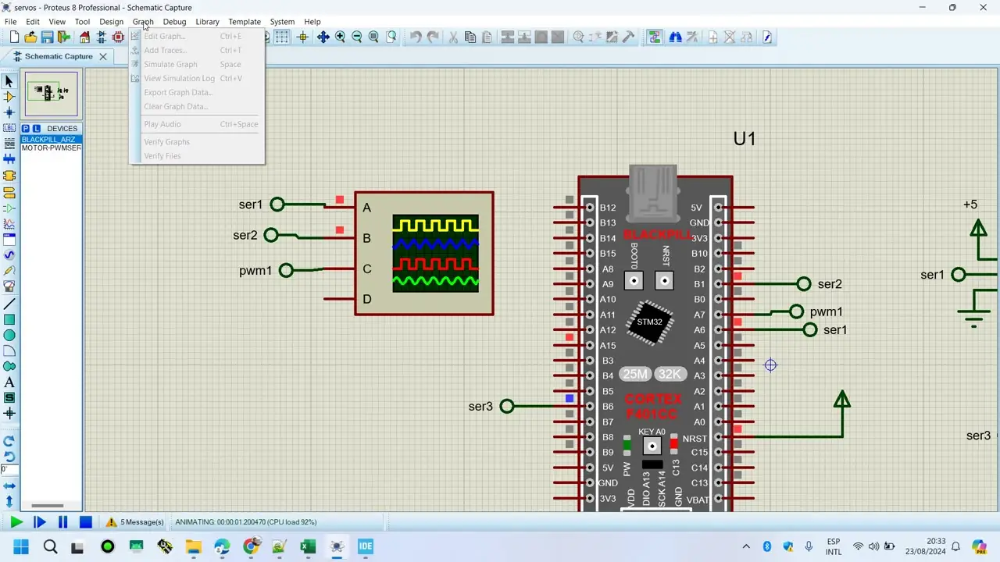

Sobre el proyecto de servos copiamos PWMB.c y PWMB.h a la carpeta de librerías e incluimos PWMB.h en main.c.
#include "servos.h"
#include "PWMB.h"Partimos del proyecto de la clase de servos y le agregamos la librería PWMB. Primero usamos un canal libre del TIM3, que ya maneja servos, para sacar una señal PWM: funciona siempre que comparta los 50 Hz y el prescaler de los servos. Después configuramos TIM1 con otro prescaler y 100 Hz para un PWM independiente. Así se ve que las dos librerías conviven y que cada timer puede manejar servos, PWM o ambos.

Sobre el proyecto de servos copiamos PWMB.c y PWMB.h a la carpeta de librerías e incluimos PWMB.h en main.c.
#include "servos.h"
#include "PWMB.h"En TIM3 (que ya tiene servos en CH1 y CH4) activamos CH2 en PWM Generation, que sale por PA7. Hereda la configuración del timer: prescaler 16-1 y periodo 20000, es decir 50 Hz. Para 50 % de ciclo útil el pulso inicial es 10000.
Servos y PWM pueden compartir timer solo si el PWM también trabaja a 50 Hz y con el prescaler de los servos (MHz del reloj − 1).
Declaramos htim3 y definimos PWM1 en el timer 3, canal 2.
float escala = 100;
extern TIM_HandleTypeDef htim3;
PWMS PWM1 = {&htim3, &(TIM3->CCR2), TIM_CHANNEL_2};En main iniciamos los servos y enseguida el PWM. En el osciloscopio aparece la señal de 50 % en PA7 junto con las de los servos.
/* USER CODE BEGIN 2 */
SERVO_init(&SERVO1);
SERVO_init(&SERVO2);
SERVO_init(&SERVO3);
PWM_init(&PWM1);
/* USER CODE END 2 */Si la señal no aparece, revisa que Proteus tenga cargado el .hex del proyecto actual y no el de la clase anterior.
En un timer propio el PWM puede tener cualquier frecuencia y prescaler. Con prescaler 10 y 100 Hz el periodo es 16000; para 20 % de ciclo útil el pulso es 3200.
Para frecuencias altas (100 kHz) el prescaler suele ser muy bajo, 2 o 3, por eso la librería PWM no lo fija como la de servos.
En TIM1: Internal Clock, CH2 en PWM Generation (PA9), prescaler 10-1, periodo 16000, auto-reload activado y pulso inicial 3200.
En PWMB.c declaramos también htim1 y definimos PWM2. Luego lo iniciamos en main.
extern TIM_HandleTypeDef htim3;
extern TIM_HandleTypeDef htim1;
PWMS PWM1 = {&htim3, &(TIM3->CCR2), TIM_CHANNEL_2};
PWMS PWM2 = {&htim1, &(TIM1->CCR2), TIM_CHANNEL_2};
// en main
PWM_init(&PWM1);
PWM_init(&PWM2);Si copias la línea de init, cambia el nombre: con PWM_init(&PWM1) repetido, PWM2 nunca arranca.
En el osciloscopio vemos el PWM2 con el doble de frecuencia (100 Hz) y menor ancho de pulso que el PWM1, mientras los servos siguen funcionando. Cada timer puede manejar servos, PWM o ambos.